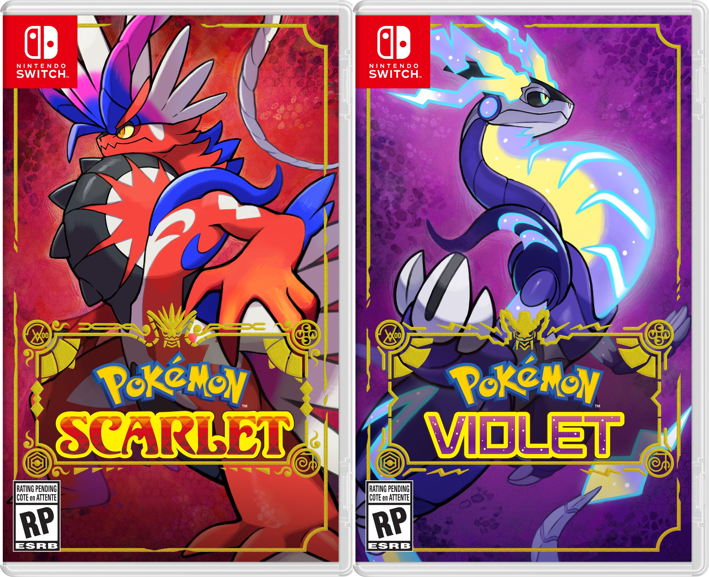
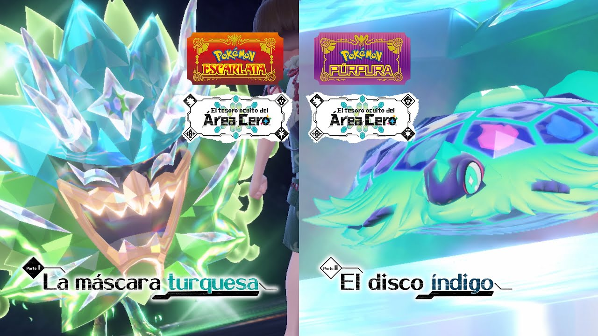
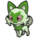
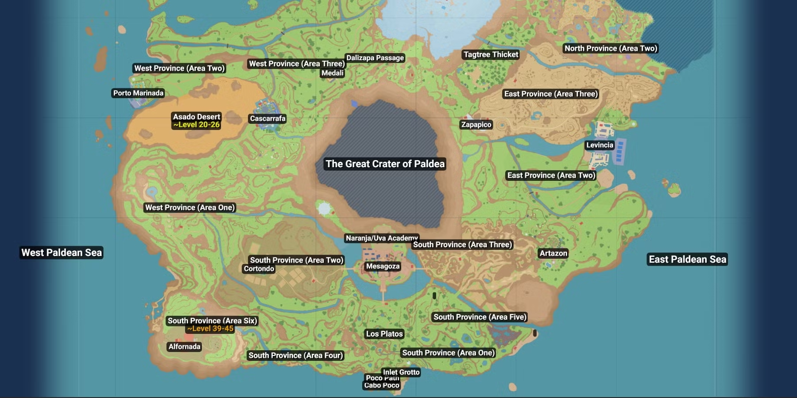
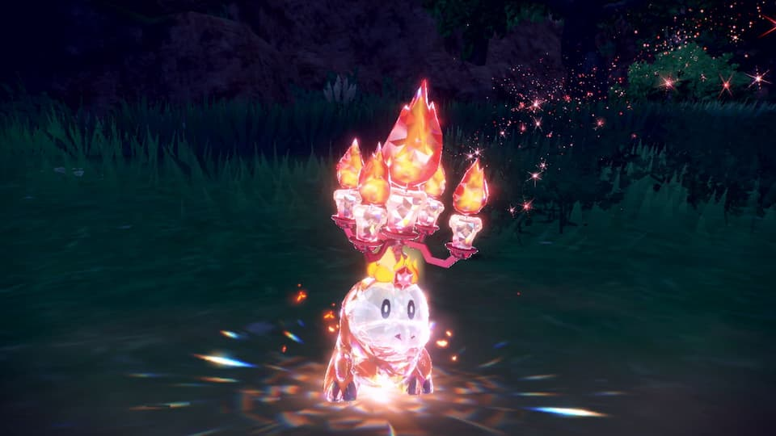
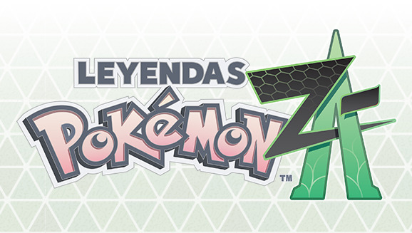
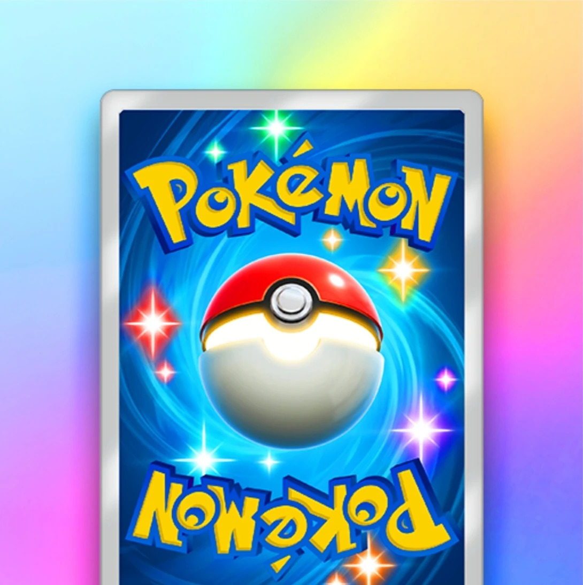

La novena y más reciente generación de Pokémon inicia el 18 de noviembre de 2022 con el lanzamiento de Pokémon Escarlata y Pokémon Púrpura en Nintendo Switch, que habían sido anunciados en febrero del mismo año.

Portadas de Pokémon Escarlata y Pokémon Púrpura
Con la temática del pasado (Pokémon Escarlata) y futuro (Pokémon Púrpura), estas entregas siguen el enfoque abierto que inició Leyendas Pokémon: Arceus.
Este juego también cuenta con contenido descargable de pago, titulado El tesoro oculto del Área Cero, que consta de dos partes y un epílogo: La máscara turquesa, publicada el 13 de septiembre de 2023, El disco índigo, disponible desde el 14 de diciembre de 2023; y Mochisteria, el epílogo que salió el 11 de enero de 2024. Estas expansiones, además de introducir nuevos Pokémon, traen de regreso más de 230 especies que no estaban presentes en el juego base.

Imágenes de La máscara turquesa y El disco índigo
En esta generación generación se incluyen, por ahora, la vigésimo sexta y vigésimo séptima temporadas de la serie, esta última todavía en emisión.
Novedades
La novena generación ha aportado lo siguiente a la saga:
119 especies de Pokémon se incluyen en total, llegando a la cantidad de 1025, siendo 8 de ellos introducidos en La máscara turquesa y 10 en El disco índigo. En total se incluye un total de 11 Pokémon legendarios y uno singular
Starters de Paldea
Sprigatito

Fuecoco
Quaxly
Los Pokémon legendarios de estas ediciones son Koraidon (Pokémon Escarlata) y Miraidon (Pokémon Púrpura)
La región en la que se desarrolla el juego es Paldea, región ambientada en la península ibérica, principalmente en España. Esta región se divide en cuatro zonas: norte, sur, este y oeste, y en centro se encuentra el Foso de Paldea, un enorme y misterioso cráter.

Mapa de Paldea
Por su parte, La máscara turquesa se desarrolla en la comarca de Noroteo, y El disco índigo en la Academia Arándano.
Estos juegos se caracterizan por tener un enfoque totalmente abierto, permitiendo recorrer el mundo sin seguir un orden específico, permitiéndonos explorar libremente el mapa.
Según la versión, la temática del juego se centrará en el pasado o en el futuro, lo que afecta a aspectos como el profesor (Profesora Albora en Pokémon Escarlata, Profesor Turo en Pokémon Púrpura).
Se introduce una nueva variante de Pokémon, las formas paradoja, versiones primitivas para la versión Escarlata, o futuristas para la versión Púrpura, introduciendo 11 de cada tipo.
Se añaden nuevas evoluciones a Pokémon existentes, y nuevas formas regionales de Paldea.
La mecánica principal introducida en los Pokémon es la teracristalización, mediante la cual el Pokémon se transforma en cristal y obtiene un teratipo, una característica individual de cada Pokémon que hace que se potencie uno de sus tipos o se cambie por uno nuevo, modificando sus efectividades. Hace falta un orbe Teracristal para activarla, y existen 19 teratipos: los 18 tipos existentes y el teratipo astral, introducido en la expansión de El tesoro oculto del Área Cero

Fuecoco teracristalizado
Existe la posibilidad de hacer picnics con los Pokémon, haciendo bocadillos con diferentes bonus durante el juego y jugando con nuestros Pokémon, pudiendo incluso obtener huevos.
Se permite la función de enviar a un Pokémon a pelear por su cuenta contra Pokémon salvajes, pudiendo ganar experiencia o recoger objetos de forma independiente.
Los Poké Campamentos nos permiten interactuar con nuestros Pokémon y preparar curry, que sirve para recuperar los PS de nuestros Pokémon, darles experiencia y mejorar nuestra relación con ellos.
Se añaden a la saga un total de 69 movimientos y 40 habilidades.
Historia
En la historia de Pokémon Escarlata y Pokémon Púrpura controlaremos a Juliana o Florián según nuestra elección de personaje. Somos miembros de la Academia Naranja/Uva, y vamos a participar en una actividad extracurricular que consiste en una búsqueda del tesoro explorando la región. Encontramos tres historias que podemos seguir libremente.
En la Travesía de la Victoria, recorreremos la región yendo a los ocho gimnasios para obtener sus medallas, antes de cada uno tendremos que pasar un examen. No hay un orden específico para ellos, y al superarlo todos podremos hacer el examen para conseguir el rango de campeón. Durante esta aventura nos acompañará Mencía, una de nuestras compañeras de academia.
En la Senda Legendaria nos enfrentaremos a Pokémon Dominantes mientras ayudamos a Damián a buscar especias ocultas. Estos son Pokémon más grandes y poderosos que los comunes debido a ingerir una de las especias ocultas.
La tercera historia es la Vía Stardust, en la que nos enfrentamos al Team Star, estudiantes rebeldes de la academia. Debemos recorrer sus bases y triunfar sobre sus miembros para enfrentarnos finalmente al líder.
Tras terminar las tres historias anteriores se desbloqueará una historia final llamada Camino a Casa, en la que el profesor del juego nos pedirá viajar al Área Cero, la zona situada en las profundidades del Foso de Paldea, acompañados de Mencía, Noa y Damián. Supuestamente en este lugar es donde apareció el Pokémon legendario Koraidon o Miraidon, y en el fondo del cráter ocurre la teracristalización.
Como postgame del juego tenemos la Gran Purga Académica, un torneo entre los miembros de la academia, organizado por Mencía.
Otros juegos
En la novena generación, a pesar de seguir en desarrollo, ya existen algunos títulos anunciados o lanzados:
Leyendas Pokémon: Z-A
Leyendas Pokémon: Z-A es un próximo título para Nintendo Switch y la próxima consola Nintendo Switch 2, anunciado oficialmente el 24 de febrero de 2024. Su fecha de salida no está establecida aún, aunque está confirmado que será a finales de 2025.
Por lo que se sabe del juego hasta ahora, se ambientará en Ciudad Luminalia, la capital de Kalos, después de los hechos de Pokémon X y Pokémon Y, trayendo de vuelta otras mecánicas de la generación como la megaevolución.
En cuanto a novedades mecánicas, algunos tráilers han dejado ver la posibilidad de que los Pokémon se muevan durante los combates para esquivar y atacar en los momentos precisos, lo que contrastaría con el enfoque de turnos puro de la saga. También se han presentado los Pokémon iniciales: Chikorita, Tepig y Totodile; y el juego girará alrededor del Pokémon Legendario Zygarde.

Pokémon Trading Card Game Pocket

Pokémon Trading Card Game Pocket es un videojuego gratuito lanzado para teléfonos móviles Android e iOS el 30 de octubre de 2024, aunque tuvo un lanzamiento anticipado en Nueva Zelanda el 26 de septiembre de 2024.
Siguiendo la temática del juego de cartas real de Pokémon, en él podremos abrir sobres para obtener cartas de diferentes tipos, que nos servirán para completar nuestra colección y crear mazos con los que competir en línea en combates con otros entrenadores.
Cada sobre contiene 5 cartas, habiendo disponibles dos al día sin coste, y el juego se actualiza frecuentemente con nuevas temporadas y nuevo contenido, siendo la expansión mas reciente "Guardianes Celestiales", lanzada el 30 de abril de 2025.
Otras aplicaciones y juegos que se han lanzado incluyen Pokémon Sleep y Pokémon Champions.